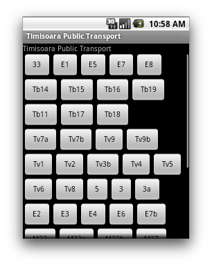
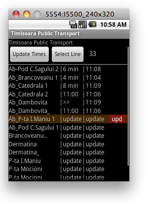
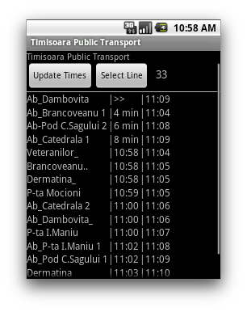

Timisoara Public Transport
Scrapes public transport information from the official transport
authority web site (times, stations, connections) and displays it
conveniently on your device.
This application is about utility, it has an spartan interface,
no bells. no whistles, no google maps or GPS required. It is
designed after my own requirements:
- show me vehicle arrival times
- show me my connections at the next station
Required permissions:
- internet access - the time are obtained from http://www.ratt.ro/txt
- sd-card write - a cache with transport line and station information
is saved on the external storage.
Screen shots:
Transport Line Selection, updating times for selected line:



TimisoaraPublicTransport - display public transport information on your device
Copyright (C) 2011 Mihai Balint
This program is free software: you can redistribute it and/or modify
it under the terms of the GNU General Public License as published by
the Free Software Foundation, either version 3 of the License, or
any later version.
This program is distributed in the hope that it will be useful,
but WITHOUT ANY WARRANTY; without even the implied warranty of
MERCHANTABILITY or FITNESS FOR A PARTICULAR PURPOSE. See the
GNU General Public License for more details.
You should have received a copy of the GNU General Public License
along with this program. If not, see http://www.gnu.org/licenses/.
Mihai Balint (nailuii@gmail.com)
Mihai Balint (nailuii@gmail.com)
You can download this project in either zip, tar or ready to install Android apk package. formats.
You can also clone the project with Git by running:
$ git clone git://github.com/MihaiBalint/TimisoaraPublicTransport